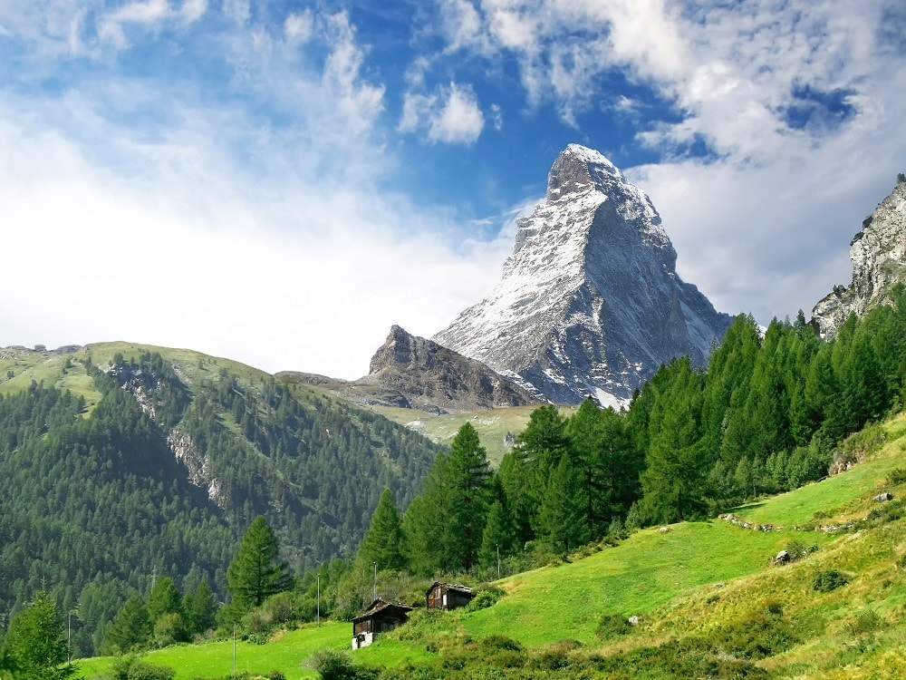
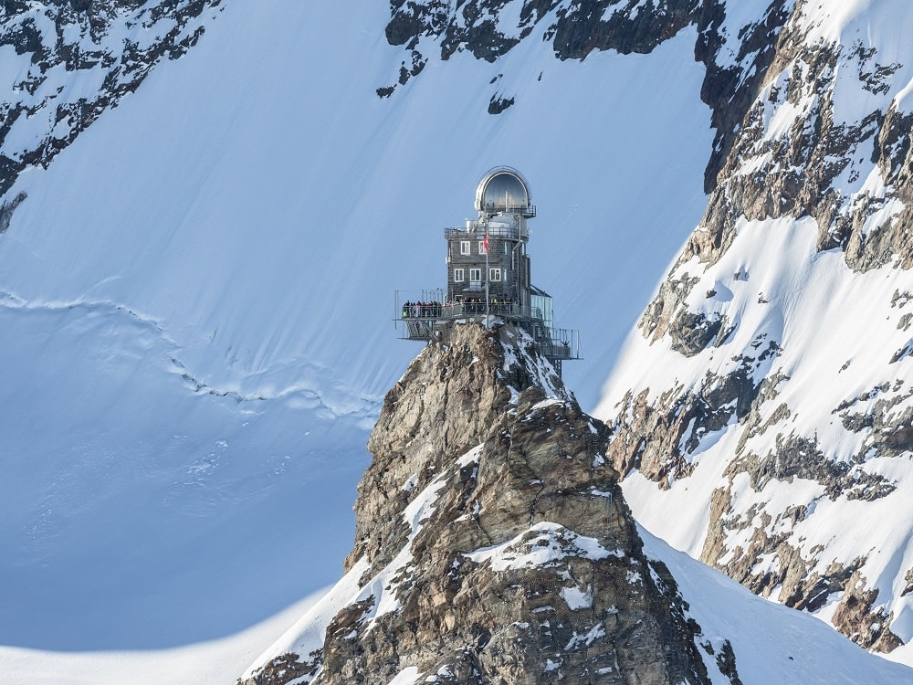
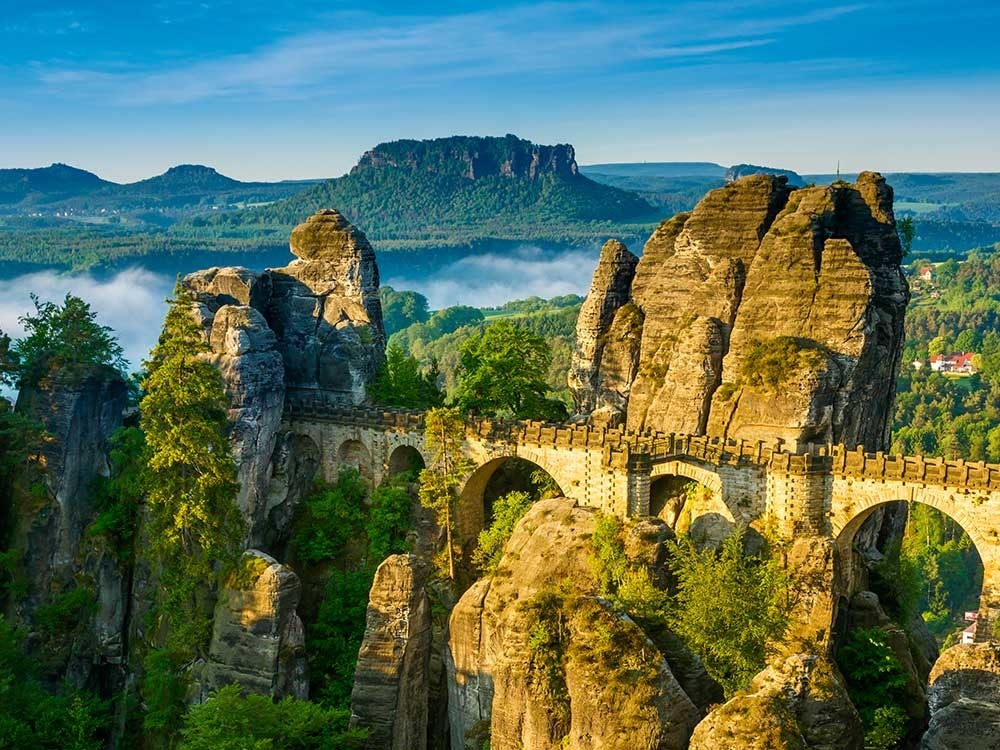

Recommendations for holidays in Switzerland in summer

×
One of the most photographed mountains in the world, a Pyramid shaped colossus - the Matterhorn is inseparably linked to Swiss Alps. Standing tall over the picturesque town of Zermatt, the region comprises of pristine landscapes and lush meadows. It is very difficult to climb; as only expert mountaineers can achieve this. Visit the Engelberg, where the world’s first revolving cable car ascends the highest lookout point in Switzerland - the Mount Titlis.

×
Step into the world of snow and glaciers and take the delightful views of the Jungfraujoch summits, majestic Eiger and Monch, which together form a massively long glacial flow. The stunning stops of the train journey through glacial gallery will take you to the top of Europe from Interlaken. When in Interlaken, make sure you visit Europe’s highest train station lying at about 3454m above sea level and explore the Jungfraujoch with its Sphinx observation terrace, a part of the UNESCO World Heritage site.

×
Saxon Switzerland welcomes you with its majestic rock gates and lofty towers. It also invites you to climb the highest fortress of Saxony. A quaint town with small colorful houses, located around 100kms from the Polish border, it is considered as one of the most fabulous places in the country. A rail line along the Elbe River with its 19th centuries steamers travel through the rocky town to the tiny port making this journey a memorable one.